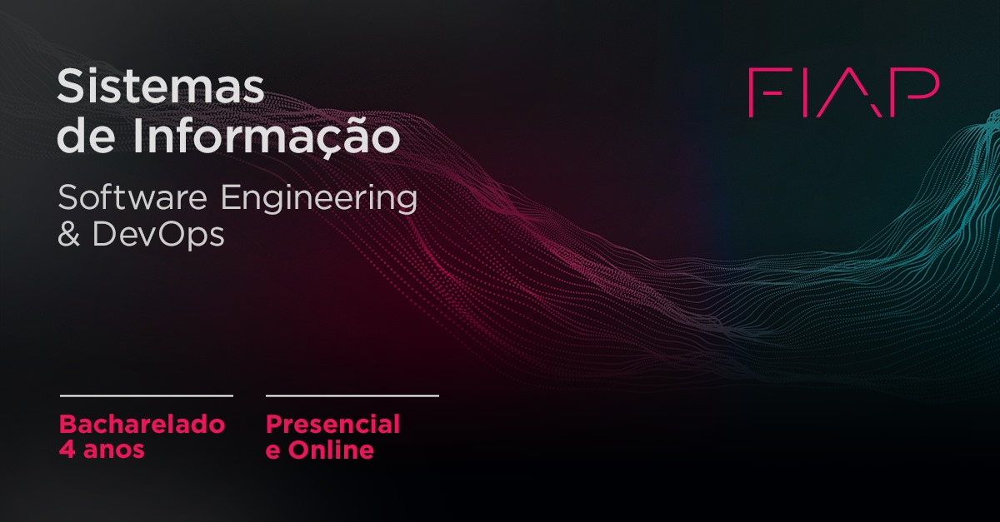

Cursos da Fiap

O BACHAREL EM SISTEMAS DE INFORMAÇÃO recebe uma visão ampla das organizações e seus modelos de negócio e de como a tecnologia pode amplificar sua estratégia. Com conteúdo que vai de hardware a inteligência artificial, passando por gestão empresarial, o curso abrange conhecimentos de desenvolvimento de aplicativos (mobile, games e web), engenharia de software e governança de TI, banco de dados, redes, business intelligence, análise de sistemas orientados a objetos, gestão de SI, gerência de projetos e segurança da informação. A grade foi desenvolvida para que, desde o primeiro ano, os alunos recebam a base necessária para atuarem na área de TI de grandes empresas, resolvendo problemas por meio de raciocínio lógico e buscando solução para os desafios das organizações.
O BACHAREL EM SISTEMAS DE INFORMAÇÃO recebe uma visão ampla das organizações e seus modelos de negócio e de como a tecnologia pode amplificar sua estratégia. Com conteúdo que vai de hardware a inteligência artificial, passando por gestão empresarial, o curso abrange conhecimentos de desenvolvimento de aplicativos (mobile, games e web), engenharia de software e governança de TI, banco de dados, redes, business intelligence, análise de sistemas orientados a objetos, gestão de SI, gerência de projetos e segurança da informação. A grade foi desenvolvida para que, desde o primeiro ano, os alunos recebam a base necessária para atuarem na área de TI de grandes empresas, resolvendo problemas por meio de raciocínio lógico e buscando solução para os desafios das organizações.